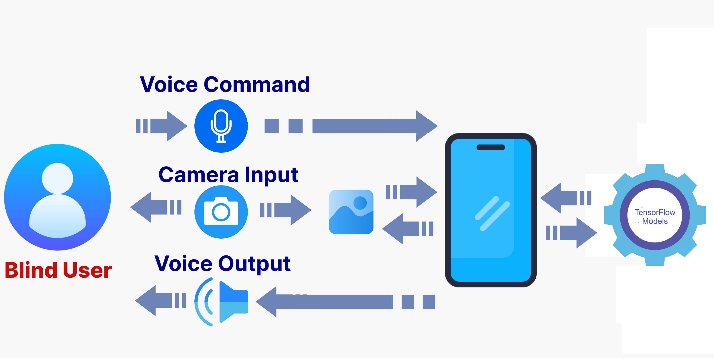

OUR APP FEATURES
The usage of image processing and object identification technologies such as YOLOv5 models from TensorFlow, as well as a TTS engine for voice output, suggests a project based on quick development and frequent testing. This is compatible with Agile techniques, which require frequent delivery of functioning software and allow for modifications at any stage of the development process.
Flutter Design
Flutter is an open-source framework by Google for building beautiful apps. It uses a single codebase written in Dart, a programming language also created by Google.
Flutter for Voice Assistance
Neural Network is implemented using flutter packages in order to perform speech recognition.flutter allows anyone to utilize machine learning by providing the tools to train one's own neural network. For visually impaired People
Text-To-Speech
(TTS) engines converts written text into spoken words, enabling applications in accessibility, automated voice responses, and virtual assistants, among others.
YOLOv5 Models From Kaggle
Kaggle offers tflite Models which are from Tensorflow. TensorFlow lets you run machine learning tasks like image recognition or speech detection on mobile devices, even though they don't have a lot of power.
APPS SCREENSHOT
Our goal is to enhance the independence and safety of
visually impaired individuals by creating a navigation
system that recognizes common indoor items like furniture
and provides auditory guidance to avoid obstacles.
This isn’t just an app it’s a companion that speaks in the
language of care and accessibility.

OTHER DOCUMENTS
These buttons provide access to key project documents: Such as Project Proposal, Ethics Form, Project Poster, and Progress Report.
FAQ
can a multifaceted accessibility ecosystem be designed and implemented to empower blind individuals by providing comprehensive solutions for autonomous travel, and shopping for market items, ensuring that they can overcome these challenges and enhance their autonomy in everyday life?
Blind individuals encounter multiple daily challenges that hinder their independence and accessibility in various aspects of life. They face difficulties in navigating public spaces and identifying market items. Existing assistive technologies and solutions often fall short in providing comprehensive support for these diverse needs. Therefore, there is a critical need to develop an integrated accessibility ecosystem that addresses these challenges collectively, aiming to empower blind individuals to lead more independent and inclusive lives.

Project Proposed Test Video
GET IN TOUCH
Phone Number
+94 75 927 8559
Email Address
azam.techofficial@gmail.com